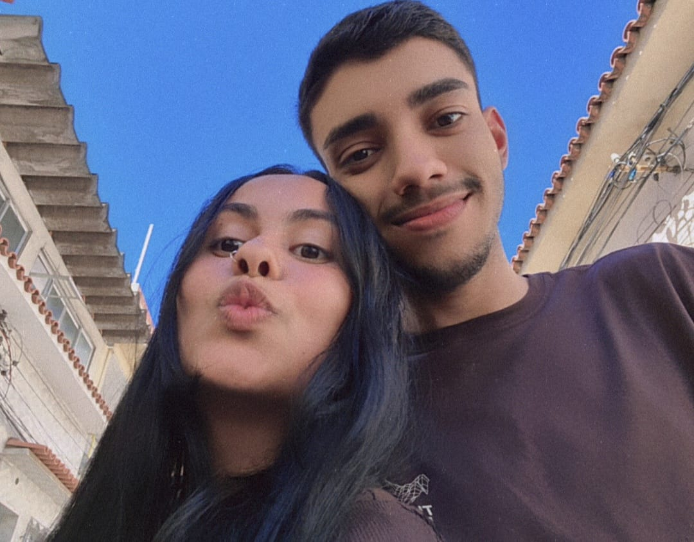
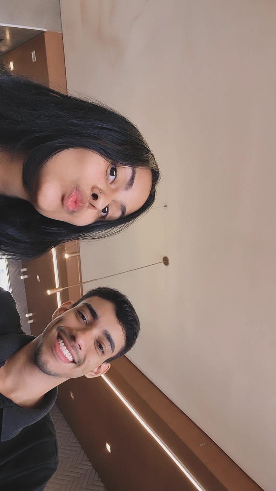

Julie, deixei aqui alguns dos nossos momentos favoritos para você ver enquanto ouve essa música que diz tudo o que eu sinto. 'Amor I love you' não é apenas um refrão, é o que eu sinto em cada segundo ao seu lado. Feliz Páscoa, meu amor!
❤️